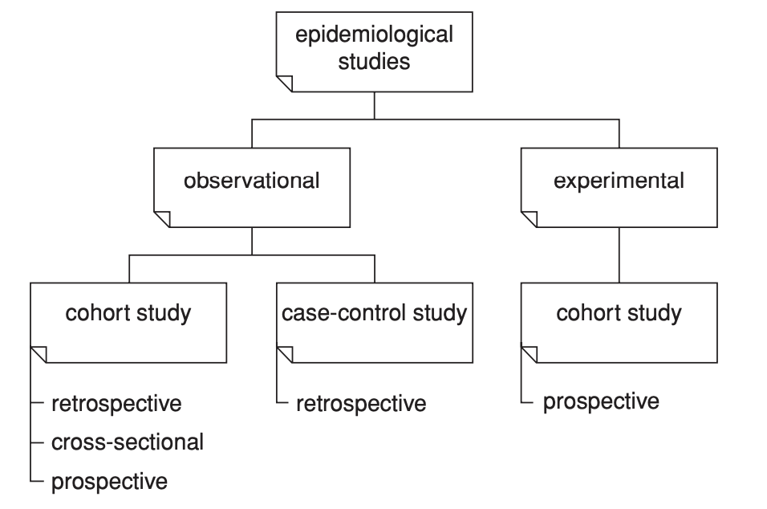

1 State of the Art - Statistics
All this section is based on Twisk (2013)
1.1 Longitudinal studies
Longitudinal studies are defined as studies in which the outcome variable is repeateadly measured; i.e. the outcome variable is measured in the same subject on several occasions. – Extracted from Twisk (2013)
Characteristics:
Observations of one subject over time are not independent of each other.
Statistics should consider that repeated observations of each subject are correlated.
This studies bring the illusion than are solving causality but only we can try temporality.
| Notation | |
|---|---|
| number of subjects | i = 1 to N |
| number of covariates | j = 1 to J |
| number of times a particular subject is measured | t = 1 to T |
| outcome variable | Y |
| covariates | X |

1.2 Cohort studies
1.2.1 Observational cohort studies
The question of probable causality remains unanswered.
can be divided into:
* prospective. * The only one that can be characterized as longitudinal.
* Analyze the longitudinal development of a certain characteristic over time (growth or deterioration).
* tracking: “stability” of a certain characteristic over time.
- retrospective.
- cross-sectional.
| Term | Definition |
|---|---|
age |
time from date of birth to date of measurement |
period |
time or moment at which the measurement is taken |
birth cohort |
group of subjects born in the same year |
1.2.1.1 Confounding Effects
age, period and cohort effects could produce variations in the results.
- period effect.
If we measure physical activity during summers, it is likely that we can have more physical activity a hot summer than a rainy one. This can produce a bias in the age trend. - cohort effect. If we want to unify results for the same age for cohorts that start at different ages, we will find that the trend is much flatter than the effects of the cohorts in isolation.
One way to avoid the bias is to use an approach called multiple longitudinal design Basically, multiple longitudinal design is to work with more than one cohort at the same time. If all the cohorts show a defined pattern for a particular measure in time, we will be able to detect it with this approach.
- Test or learning effect. Individuals start performing better with exposure.
- Low reproducibility of the measurements. Inter-period correlation coefficients (IPCs) (van ’t Hofand Kowalski, 1979)
1.2.2 Experimental cohort studies (clinical trials)
- There are prospective (ie longitudinal).
- The outcome variable Y is measured at least twice (the classical “pre-test,” “post-test” design).
- The issue of causality can be covered
1.3 One continous outcome variable Y is repeatedly measured over time
1.3.1 Two measurements
1.3.1.1 Parametric: paired t-test
Is there a difference in the outcome variable
Ybetweent = 1andt = 2?
The paired t-test is used to test the hypothesis that the mean difference between Yt1 and Yt2 equals zero.
Observations within one individual are dependent on each other.
Use if the number of subjects is quite large (say above 25).
1.3.1.1.1 Assumptions
1 - The observations of different subjects are independent and;
2 - The differences between the two measurements are approximately normally distributed.
1.3.1.2 Non-parametric: (Wilcoxon) signed rank sum
Doesn’t assume any distribution.
1.3.2 More than two measurements
Does the outcome variable
Ychange over time?
1.3.3 Multivariate analysis of variance (MANOVA) for repeated measurements
1 - Observations of different subjects. at each of the repeated measurements need to be independent; and. 2 - The observations need to be multivariate normally distributed, which is comparable but slightly more restrictive than the requirement that the differences between subsequent measurements be normally distributed.
1.3.3.1 ANOVA (univariate) vs. MANOVA (multivariate)
To perform an ANOVA there is one extra assumption with 2 parts:
Sphericity assumption (epsilon coefficient)
3 - All correlations in outcome variable Y between repeated measurements are equal, irrespective of the time interval between the measurements.
4 - The variances of outcome variable Y are the same at each of the repeated measurements.
Which approach should be used? If the assumptions are met, ANOVA is more powerful for smaller samples:
“The restriction of the assumption of sphericity (i.e. equal correlations and equal variances over time) leads to an increase in degrees of freedom, i.e. an increase in power for the “univariate” approach. This increase in power becomes more important when the sample size becomes smaller. Historically, the “multivariate” approach was developed later than the “univariate” approach, especially for situations when the assumption of sphericity does not hold. So, one could argue that when the assumption of sphericity is violated, the “multivariate” approach should be used.
– Extracted from Twisk (2013)
MAMOVA in R - https://www.appsilon.com/post/manova-in-r
1.4 One continuous outcome variable Y is compared between different groups.
This design is known as the “one-within, one-between” design. Time is the within-subject factor and the group variable is the between-subjects factor.
Is there a difference in change over time for outcome variable Y between two or more groups?
This question can also be answered with MANOVA for repeated measurements if it is assumed that the covariance matrices of the different groups that are compared to each other are homogeneous (independent sample
t-test).Apparently, MANOVA could be biased when you have a lot of drop-offs in the study (Everitt (1998)).
1.5 Continuous outcome variable and several covariates
(which can be either continuous, dichotomous, or categorical)
“traditional” methods tried to reduce the statistical longitudinal problem into a cross-sectional problem.
1.5.1 Traditional methods.
- Analysis of the relationships between changes in different parameters between two points in time. (but, you are not using all the data)
- Use individual regression lines with time.
1.5.2 New methods.
With the development of (new) statistical techniques, such as:
Generalized estimating equations (GEE) analysis and;
Mixed-model analysis,
it has become possible to analyze longitudinal relationships using all available longitudinal data, without summarizing the longitudinal development of each subject into one value.
Crippa (2022) A review of Longitudinal Data Analysis in R: https://rpubs.com/alecri/review_longitudinal